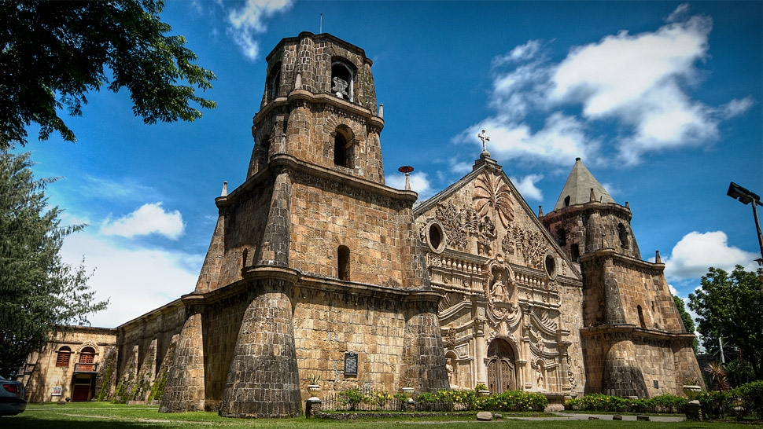

Diverse Cultural Heritage
The Philippines boasts a rich and diverse cultural heritage shaped by centuries of history and influences. From indigenous practices to Spanish and American colonial legacies, the country's culture is a vibrant tapestry.

Witness traditional Filipino dances that showcase the country's lively and colorful folk traditions.
Explore historic churches and architecture, a testament to the enduring influence of Spanish colonization.

Participate in local festivals and celebrations, where communities come together to express their unique identities.
Discover the Philippines' cultural richness and immerse yourself in a tapestry of traditions, arts, and festivities.